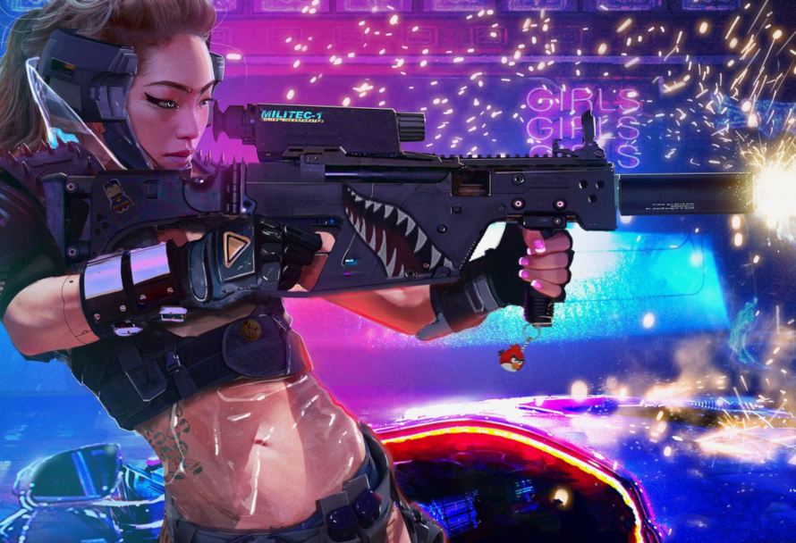

The following weapons can be found in Cyberpunk 2077.
Weapons typically fall under pistols, shotguns, and rifles, and they can be either Tech, Power, or Smart.
A large percentage of weapons can fit modules that can change they way they handle, those modules being Tech, Smart, or Power.
Players may acquire a Tech pistol but can then replace the module so it becomes a Power or Smart pistol.
Gameplay mechanics can change based on modules and modules will also have rarities attached.
Weapons are manufactured by 12 corporations in the Cyberpunk 2077 universe.
Weapons availability are based on the class of weapons of the manufactures.
Each manufacture is under either Lower, Middle, or Upper Tier.
The higher the tier the more rare and expensive the weapons are.